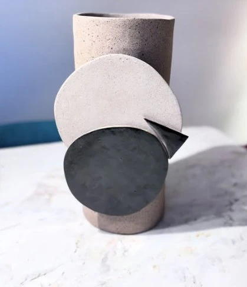
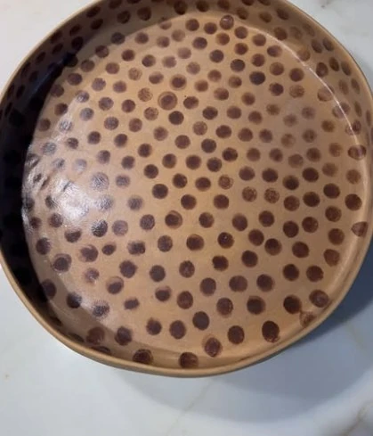
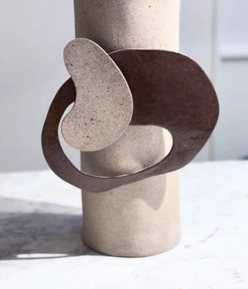
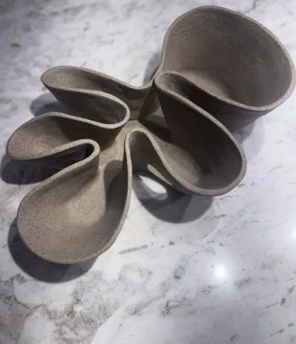

Cerâmica autoral, feita à mão
Forma, barro e tempo.
Role para baixo
Cada peça é única. Nenhuma se repete.
[Uma frase da Marilia sobre o processo dela — argila, queima, esmalte.]
Ver coleção
Vasos
Fruteiras
Castiçais
Travessas
Jarras
Esculturas
Peças únicas
Vasos
Fruteiras
Castiçais
Travessas
Jarras
Esculturas
Peças únicas
O ateliê
Do barro cru à última queima.
[Texto da Marilia: quem ela é, como começou, de onde vêm as formas e as pintas.]
-
1
ModelagemTorno, placas e rolinhos de argila, tudo moldado à mão.
-
2
PinturaPintas, listras e pingos feitos um a um, com pincel.
-
3
QueimaO forno define o tom final: por isso nenhuma peça sai igual.
Encomendas
Uma peça pensada para o seu espaço.
[Como funcionam as encomendas: prazos, tipos de peça, projetos para casas e restaurantes.]
Falar com a Marilia



